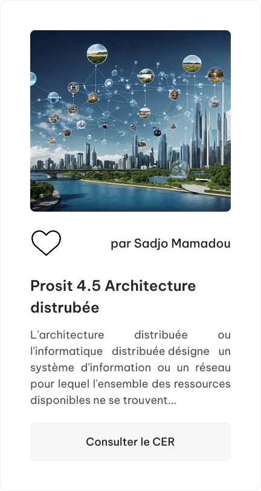

Tous les CERs

Prosit 4.1 Développement avancé
Advance Web Development fait référence au processus de création de sites Web dynamiques et interactifs qui vont au-delà des pages Web statiques. Cela implique l'utilisation de techniques et de technologies de codage avancées pour créer des sites Web fonctionnels et visuellement attrayants qui améliorent l'expérience utilisateur.
Consulter le CERProsit 2.2 Modification UML
Le Langage de Modification (LM) est un langage qui permet de décrire les changements nécessaires à la mise à jour d'un système d'information existant, sans le reconstruire entièrement.
Consulter le CER
Prosit 3.2 Annuaire Active Directory
L'Annuaire Active Directory (AD) est un service d'annuaire conçu par Microsoft pour les environnements Windows Server. Il permet de centraliser la gestion des utilisateurs, ordinateurs et ressources.
Consulter le CER
Prosit 3.3 API et Webservice
Les API permettent aujourd'hui de connecter plusieurs applications entre elles, facilitant ainsi l'échange de données et l'interopérabilité des services au sein d'un système d'information.
Consulter le CER